1. Nomenklatura və məhsul kartları
1.1. Yeni məhsulun yaradılması
Hansı xanaların doldurulması mütləqdir (ad, barkod, ölçü vahidi, ƏDV dərəcəsi)?
Yeni məhsulun əlavə edilməsi üçün aşağıdakı düyməyə klik edilir:
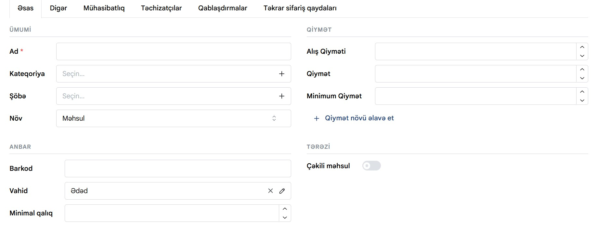
Əsas bölməsində
Ad — məhsulun adı; mütləq doldurulmalıdır (qırmızı ulduzla işarələnib).
Kateqoriya — məhsulun aid olduğu kateqoriya seçilir; yoxdursa "+" ilə yeni kateqoriya yaradıla bilər.
Şöbə — şöbə xanası əlavə etdiyiniz məhsul və ya xidmətin şirkət daxilində konkret hansı departamentə (məsələn, Mətbəx, Elektronika) aid olduğunu müəyyən etmək üçün istifadə olunur. Bu göstərici satışları, xərcləri və inventar qalığını şöbələr üzrə ayrı-ayrı izləməyə və hesabatlılığı rahat şəkildə təhlil etməyə imkan verir. Əgər siyahıda uyğun şöbə yoxdursa, xananın sağındakı `+` düyməsi ilə yenisini əlavə edə bilərsiniz.
Növ — məhsulun tipi seçilir (məsələn "Məhsul, Kombo və Xidmət"). Məhsul ayrı-ayrılıqda satılan konkret fiziki və ya rəqəmsal məhsuldur. Xədmət müştəriyə görülən iş və ya göstərilən xidmətdir. Kombo isə bir neçə məhsul və ya xidmətin birlikdə paket şəklində təqdim olunmasıdır.
Alış Qiyməti — məhsulun təchizatçıdan alındığı qiymət yazılır.
Qiymət — müştəriyə satılacaq son qiymət yazılır.
Minimum Qiymət — endirim zamanı qiymətin düşə biləcəyi ən aşağı hədd göstərilir.
"+ Qiymət növü əlavə et" — istəyə görə əlavə qiymət tipləri (topdan, VIP və s.) yaratmaq üçün.
Barkod — məhsulun barkodu; əllə yazıla və ya skanerlə oxudula bilər.
Vahid — ölçü vahidi (ədəd, kq və s.) seçilir.
Minimal qalıq — anbarda bu miqdardan aşağı düşəndə xəbərdarlıq üçün hədd göstərilir.
Çəkili məhsul — çəkili məhsul adətən öncədən paketlənməyən, qiyməti sabit ədədə görə deyil, müştərinin istədiyi miqdarda ölçülərək (çəki, həcm və s.) təyin olunan məhsuldur. Satış zamanı kassa tərəzilərindən çıxan xüsusi barkodlar və ya PLU kodları vasitəsilə məhsulun dəqiq ölçüsü sistemə ötürülür və yekun məbləğ vahid qiymətə uyğun olaraq avtomatik hesablanır. Anbar uçotunda da azalma ədəd sayına görə deyil, satılan dəqiq miqdar (qram, kiloqram, litr və s.) üzrə aparılır.
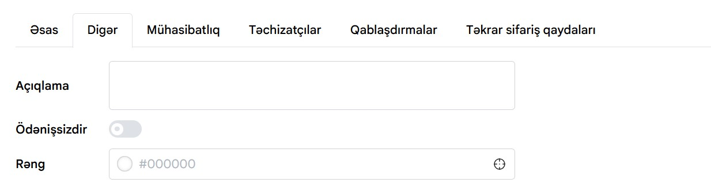
Digər bölməsində
Açıqlama — məhsul haqqında əlavə qeyd və izahat üçün sahə.
Ödənişsizdir — açar aktiv edilərsə, məhsul pulsuz (nümunə, hədiyyə və s.) kimi qeyd olunur.
Rəng — məhsula sistemdə vizual fərqləndirmə üçün rəng kodu (#000000 kimi) təyin edilir.
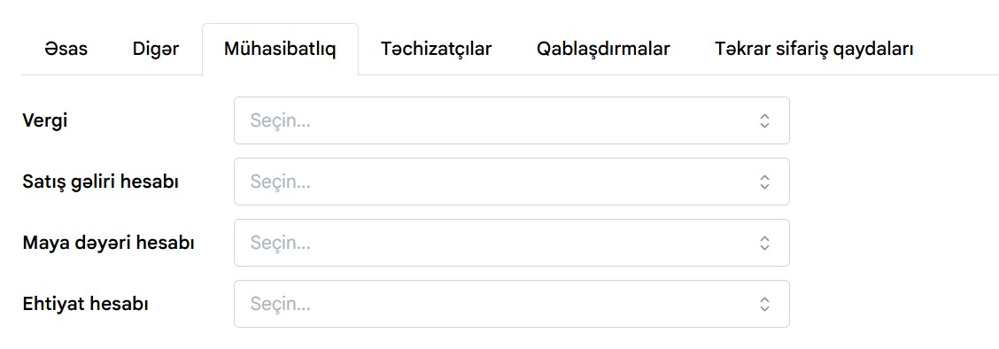
Mühasibatlıq bölməsində
Vergi — məhsula aid vergi dərəcəsi (ƏDV) seçilir.
Satış gəliri hesabı — satışdan əldə olunan gəlirin yazılacağı mühasibat hesabı.
Maya dəyəri hesabı — satış zamanı məhsulun maya dəyərinin köçürüləcəyi hesab.
Ehtiyat hesabı — anbardakı satılmamış qalığın dəyərinin göstərildiyi hesab.
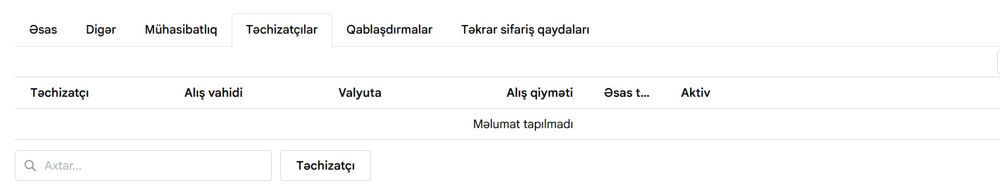
Təchizatçılar bölməsində
Təchizatçı sütunu məhsulu təmin edən təchizatçının adının göstərildiyi yerdir.
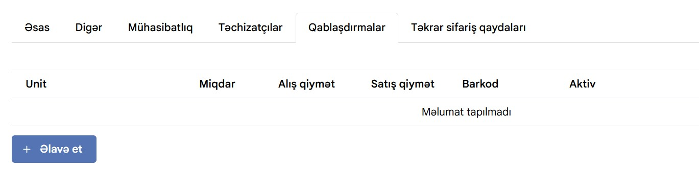
Qablaşdırma bölməsində
Eyni məhsulu bir neçə fərqli ölçüdə (qablaşdırma formasında) satmaq mümkün olur — məsələn məhsul əsas vahiddə (ədəd, kq) uçota alınsa da, müştəriyə bəzən tək-tək, bəzən isə toplu (qutu, karton, paket) şəkildə satıla bilər. Bu bölmədə hər qablaşdırma növü üçün ayrıca miqdar, qiymət və barkod təyin olunur ki, kassada hansı forma seçilirsə seçilsin, sistem anbardakı əsas vahidə görə düzgün silmə aparsın və doğru qiymətlə satsın.
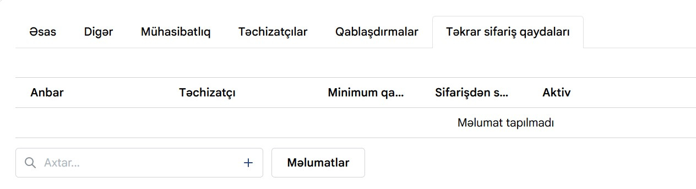
Təkrar sifariş qaydaları bölməsində
Sistem məhsulun anbardakı qalığını özü izləyib, müəyyən hədddən aşağı düşəndə təyin olunmuş təchizatçıya avtomatik (və ya xatırladıcı şəklində) sifariş ehtiyacı yaradır — beləliklə mal bitmədən əvvəl yenidən sifariş vermək unudulmaz.
Barkod necə əlavə olunur: əllə, yoxsa skanerlə? Məhsul çəki ilə və ya ədədlə satıldıqda fərq nədir?
Barkod həm skanerlə oxudulub sahəyə avtomatik yazıla bilər, həm də klaviaturadan əllə daxil edilə bilər. Ədədlə satılan məhsulda barkod sabit koddur. Çəki ilə satılan məhsulda barkodun içinə çəki tərəzidə kodlaşdırılır və kassa bu kodu oxuyanda çəkini avtomatik tanıyır.
1. Nomenklatura və məhsul kartları
1.2. Kateqoriyalar və qruplar
Kateqoriya ağacının (qovluqların və alt qovluqların) qurulması
Kateqoriyalar əsas menyu bölməsində "Kateqoriyalar" bölməsindən yaradılır. Əvvəlcə əsas (üst) kateqoriya açılır, sonra onun daxilində alt-kateqoriyalar əlavə edilir. Hər məhsul yaradılarkən ona uyğun kateqoriya seçilir.
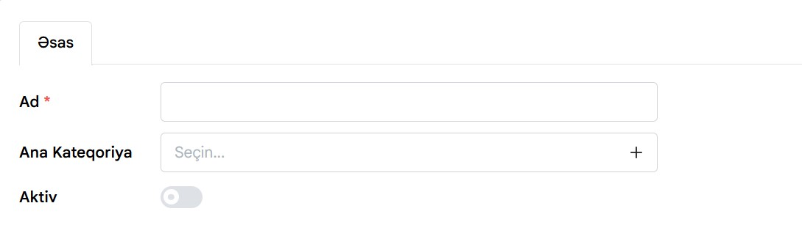
Kateqoriyanın yaradılması
Əsas kateqoriya — məhsulların aid olduğu əsas qovluq yaradılır.
Alt kateqoriya — əsas kateqoriyanın daxilində əlavə qovluq yaradılır.
Ana kateqoriya — alt-kateqoriya yaradılarkən onun hansı əsas kateqoriyaya aid olduğu seçilir.
Məhsul — məhsul yaradılarkən uyğun kateqoriyaya əlavə olunur.
Məhsulları bir kateqoriyadan digərinə toplu şəkildə köçürmə
Məhsul siyahısında bir neçə məhsul işarələnib "Kateqoriyanı dəyiş" əməliyyatı ilə hamısı eyni vaxtda yeni kateqoriyaya köçürülə bilər.
Kateqoriyanın dəyişdirilməsi
Məhsulların seçilməsi — köçürülmək istənilən məhsullar siyahıdan seçilir.
Kateqoriyanı dəyiş — seçilmiş məhsullar üçün kateqoriya dəyişdirmə əməliyyatı seçilir.
Yeni kateqoriya — məhsulların keçiriləcəyi yeni kateqoriya seçilir.
1. Nomenklatura və məhsul kartları
1.3. Qiymətlər və marja
Maye dəyəri (alış qiyməti) ilə satış qiyməti arasındakı fərq necə tənzimlənir?
Maya dəyəri mədaxil qaiməsindəki alış qiymətinə əsasən avtomatik hesablanır, satış qiyməti isə əl ilə və ya marja faizi göstərməklə təyin olunur. Fərq (marja) sistem tərəfindən avtomatik hesablanıb hesabatlarda göstərilir.
Fərqli qiymət növləri təyin etmək olarmı (pərakəndə, topdan, endirimli)?
Bəli, çox sistemdə "qiymət tipləri" funksiyası var — eyni məhsula bir neçə qiymət (pərakəndə, topdan, VIP, endirimli) təyin edilir və kassada müştəri tipinə görə uyğun qiymət seçilir.
2. Kontragentlər
2.1. Alışlar
Alış sənədinin əlavə edilməsi
Alış sənədi müəssisə və ya fərdi sahibkarın təchizatçılardan mal, xidmət və ya xammal satın aldığını rəsmi şəkildə təsdiqləyən uçot sənədidir. Bu sənəddə alınan məhsulun adı, miqdarı, qiyməti, yekun məbləği, ödənilən ƏDV, əməliyyat tarixi və təchizatçı haqqında məlumatlar əks olunur. Mühasibatlıq və anbar sistemlərində (ERP) alış sənədi həm məhsulların anbar qalığına daxil edilməsi, həm də mal satan qarşısındakı borcun doğru hesablanması üçün əsas təşkil edir.. Alış sənədi Təchizat bölməsində "Alışlar" bölməsindən yaradılır
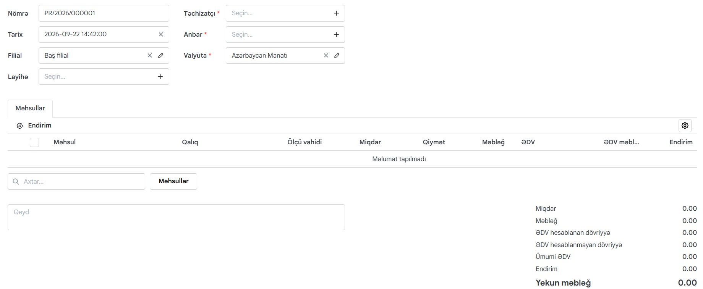
Alış sənədinin yaradılması
Tarix — Alış əməliyyatının baş verdiyi və ya sənədin rəsmiləşdirildiyi vaxtı bildirir. Buraya malların təhvil alındığı və ya qaimənin tərtib edildiyi cari tarix və saat qeyd olunur.
Filial — Əməliyyatı həyata keçirən şirkət bölməsini göstərir. Malların hansı filialın adına alındığını müəyyən etmək üçün seçilir.
Anbar — Alınan məhsulların mədaxil olunacağı və fiziki olaraq yerləşdiriləcəyi saxlanma yeridir. Sistemdə ehtiyatların doğru hesaba alınması üçün mütləq doldurulmalıdır.
Valyuta — Əməliyyatın aparıldığı pul vahidini müəyyən edir (məsələn, Azərbaycan Manatı). Hesablaşmaların və məbləğlərin hansı valyuta üzrə hesablanacağını göstərir.
Layihə — Bu alışın müəyyən bir xüsusi layihə və ya sifariş çərçivəsində edilib-edilmədiyini göstərir. Xərclərin aidiyyəti layihə üzrə izlənməsi üçün istifadə olunur.
Məhsullar — Alınan malların siyahısını, miqdarını, qiymətini, ölçü vahidini və ƏDV/endirim məbləğlərini daxil etdiyiniz cədvəl hissəsidir. Bura alış edilən hər bir məhsulun maliyyə və say detalları əlavə olunur.
Axtar — Bazada olan məhsulları adı və ya kodu üzrə sürətli şəkildə tapıb sənədə əlavə etmək üçün istifadə olunan axtarış xanasıdır.
Qeyd — Sənədə dair xüsusi şərtləri, əlavə açıqlamaları və ya xatırlatmaları daxil etmək üçün nəzərdə tutulmuş sərbəst mətnyazma sahəsidir. Məsələn, təchizatçının qaimə nömrəsi və ya ödənişlə bağlı xüsusi qeydlər bura yazılır.
Bu xanaları doldurduqdan sonra "Saxla" bölməsinə basılır və daha sonra isə "Təsdiq" düyməsi ilə alış sənədi təsdiq edilir.
2. Kontragentlər
2.2. Fakturalar
Faktura sənədinin əlavə edilməsi
Faktura sənədi satıcı (təchizatçı) tərəfindən alıcıya təqdim edilən, satılmış mal, göstərilmiş xidmət və ya yerinə yetirilmiş işlərin siyahısını, miqdarını və dəyərini əks etdirən rəsmi ödəniş və uçot sənədidir. Bu sənəd alıcı üçün ödəniş etmək və ya edilmiş ödənişi təsdiqləmək üçün əsas yaradır, eyni zamanda mühasibatlıqda vergi (xüsusən ƏDV) hesablamalarında və borc öhdəliklərinin izlənilməsində istifadə olunur. Qısası, alış/satış sənədi anbar və mal hərəkətini təsdiqləyir, faktura isə daha çox tərəflər arasındakı maliyyə-vergi öhdəliklərini və ödəniş tələbini resmileşdirir.
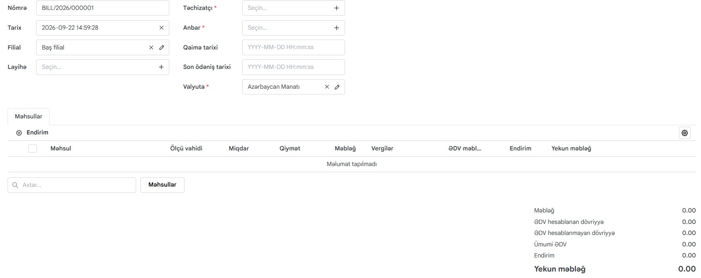
Faktura sənədinin yaradılması
Nömrə — Sistem tərəfindən avtomatik generasiya olunan fakturanın unikal uçot nömrəsidir. Sənədin sistemdə identifikasiyası və arxivdə rahat tapılması üçün istifadə olunur.
Tarix — Fakturanın sistemə daxil edildiyi və ya rəsmiləşdirildiyi vaxtı bildirir.
Filial — Əməliyyatın şirkətin hansı filialı və ya strukturu adından aparıldığını göstərir.
Layihə — Bu alışın konkret hansı layihə və ya sifariş çərçivəsində edildiyini qeyd etmək üçündür. Xərclərin aidiyyəti layihə üzrə izlənməsinə kömək edir.
Təchizatçı — Malları və ya xidmətləri aldığınız qarşı tərəfi (satıcı şirkəti) seçdiyiniz məcburi sahədir.
Anbar — Alınan məhsulların mədaxil olunacağı və yerləşdiriləcəyi fiziki saxlanma yeridir.
Qaimə tarixi — Təchizatçının sizə təqdim etdiyi kağız və ya elektron fakturanın (qaimənin) üzərində olan faktiki tərtib tarixidir.
Son ödəniş tarixi — Təchizatçı qarşısında olan borcun ödənilməli olduğu son tarixi göstərir. Ödəniş vaxtlarına nəzarət etmək üçün istifadə olunur.
Valyuta — Hesablaşmanın və məbləğlərin hansı pul vahidində aparılacağını müəyyən edir.
Məhsullar — Fakturaya əlavə olunan malların siyahısını, onların miqdarını, qiymətini, vergi və endirim göstəricilərini əks etdirən bölmədir.
Axtar — Məhsul kataloqundan lazımi malı adı və ya artikulu üzrə cəld tapıb fakturaya əlavə etmək üçün axtarış sahəsidir.
Bu xanaları doldurduqdan sonra "Saxla" bölməsinə basılır və daha sonra isə "Təsdiq" düyməsi ilə alış sənədi təsdiq edilir.
2. Kontragentlər
2.3. Sifarişlər
Bu bölmə haqqında məlumat olacaq...
Bu bölmə tədricən doldurulacaqdır.
2. Kontragentlər
2.4. Qaytarmalar
Bu bölmə haqqında məlumat olacaq...
Bu bölmə tədricən doldurulacaqdır.
2. Kontragentlər
2.5. Təchizatçılar
Bu bölmə haqqında məlumat olacaq...
Bu bölmə tədricən doldurulacaqdır.
3. Anbar uçotu (Malların hərəkəti)
3.1. Mədaxil (Malın qəbulu)
Addım-addım: «Mədaxil qaiməsi» necə yaradılır?
Daxilolma sənədi anbara yeni məhsulların əlavə edilməsi üçün yaradılır. Yeni daxilolma yaratmaq üçün müvafiq bölməyə keçilir və sənəd üzrə əsas məlumatlar doldurulur.
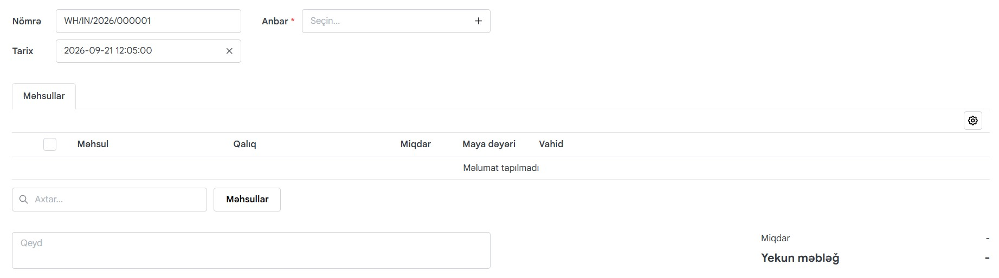
Nömrə — sənədin unikal nömrəsidir. Sistem tərəfindən avtomatik təyin oluna bilər və daxilolma sənədini müəyyən etmək üçün istifadə olunur.
Tarix — daxilolmanın yaradıldığı və ya məhsulların anbara daxil olduğu tarix və saat qeyd olunur.
Anbar — məhsulların hansı anbara daxil ediləcəyi seçilir. Anbar seçimi üçün "Seçin..." sahəsindən uyğun anbar seçilir.
Məhsullar — daxil ediləcək məhsullar bu bölmədən əlavə olunur. "Məhsullar" düyməsinə klikləməklə məhsul siyahısından lazımi məhsullar seçilir.
Miqdar — anbara daxil edilən məhsulun miqdarı qeyd olunur.
Maya Dəyəri — məhsulun alış və ya maya dəyəri göstərilir. Bu məlumat məhsulun anbara hansı dəyərlə daxil olduğunu müəyyənləşdirmək üçün istifadə olunur.
Vahid — məhsulun ölçü vahidi göstərilir. Məsələn, ədəd, kq, litr və s.
Qeyd — daxilolma ilə bağlı əlavə məlumat yazmaq üçün istifadə olunur.
Təchizatçı necə seçilir və kağız qaimənin nömrəsi hara qeyd olunur?
Təchizatçı məhsul və ya xidmətlərin müəssisəyə təqdim edilməsinə cavabdeh olan tərəfdir. Təchizatçının sistemə əlavə edilməsi zamanı onun əsas məlumatları, əlaqə vasitələri və ünvan məlumatları qeyd olunur.
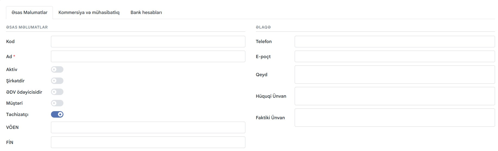
Əsas məlumatlar bölməsində:
Kod — təchizatçını sistemdə fərqləndirmək üçün istifadə olunan unikal kod qeyd edilir.
Ad — təchizatçının adı yazılır. Bu sahənin doldurulması məcburidir.
Aktiv — təchizatçının hazırda aktiv olub-olmadığını müəyyən edir. Aktiv olduqda təchizatçı digər əməliyyatlarda seçilə bilər.
Şirkətdir — təchizatçının şirkət olub-olmadığını göstərir.
ƏDV Ödəyicisidir — təchizatçının ƏDV ödəyicisi olub-olmadığını müəyyən edir.
Müştəri — həmin tərəfin eyni zamanda müştəri kimi də istifadə olunmasını göstərir.
Təchizatçı — tərəfin təchizatçı kimi sistemdə istifadə olunmasını müəyyən edir. Təchizatçı seçimi aktiv edildikdə həmin tərəf daxilolma və digər satınalma əməliyyatlarında təchizatçı kimi seçilə bilər.
VÖEN — təchizatçının vergi ödəyicisinin eyniləşdirmə nömrəsi qeyd edilir.
FİN — fiziki şəxsin şəxsiyyətini müəyyən edən FİN kodu qeyd edilir.
Telefon — təchizatçının əlaqə nömrəsi qeyd olunur.
E-poçt — təchizatçının elektron poçt ünvanı yazılır.
Qeyd — təchizatçı haqqında əlavə məlumatların qeyd edilməsi üçün istifadə olunur.
Hüquqi ünvan — təchizatçının rəsmi hüquqi ünvanı qeyd edilir.
Faktiki ünvan — təchizatçının faktiki fəaliyyət göstərdiyi ünvan yazılır.
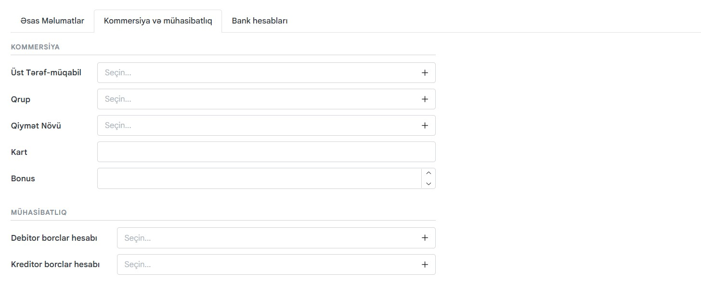
Kommersiya və mühasibatlıq bölməsində:
Üst Tərəf-müqabil — təchizatçının hansı üst tərəf-müqabilə aid olduğunu seçmək üçün istifadə olunur. Lazım olan tərəf-müqabil "Seçin..." sahəsindən seçilir.
Qrup — təchizatçının aid olduğu qrup seçilir. Bu seçim təchizatçıların sistemdə qruplaşdırılmasına və daha rahat idarə olunmasına imkan verir.
Qiymət növü — təchizatçı ilə aparılan əməliyyatlarda istifadə olunacaq qiymət növü seçilir.
Kart — təchizatçı ilə bağlı kart və ya müvafiq kart məlumatı qeyd olunur.
Bonus — təchizatçı üzrə tətbiq olunan bonus dəyəri qeyd edilir.
Debitor borclar hesabı — təchizatçı ilə bağlı yaranan debitor borcların hansı mühasibat hesabında uçota alınacağını müəyyən etmək üçün istifadə olunur.
Kreditor borclar hesabı — təchizatçı qarşısında yaranan kreditor borcların hansı mühasibat hesabında uçota alınacağını müəyyən edir.
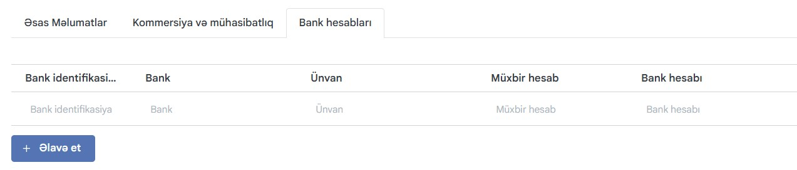
Bank hesabları bölməsində:
Bank identifikasiyası — bankın identifikasiya məlumatı qeyd olunur.
Bank — təchizatçının hesabının yerləşdiyi bank seçilir və ya qeyd olunur.
Ünvan — bankın ünvanı göstərilir
Müxbir hesab — bank hesabı ilə bağlı müxbir hesab məlumatı qeyd olunur.
Bank hesabı — təchizatçının bank hesabının nömrəsi qeyd edilir.
Beləliklə, təchizatçının əsas məlumatları, kommersiya və mühasibatlıq məlumatları, həmçinin bank hesabları tam şəkildə qeyd olunmuş olur.
Sənəd təsdiqləndikdən sonra anbarda olan məhsulun maya dəyəri necə dəyişir?
Sənəd təsdiqlənən kimi məhsulun anbar qalığı və maya dəyəri yenilənir; adətən orta çəkili maya dəyəri metodu ilə hesablanır.
3. Anbar uçotu (Malların hərəkəti)
3.2. Silinmə (Məxaric / Spisaniye)
Mal hansı hallarda silinir (xarab olma, sınma, istifadə müddətinin bitməsi)?
Silinmə bölməsində:
Nömrə — sənədə sistem tərəfindən avtomatik verilən nömrə (məsələn "WH/SCRAP/2026/000001"); əllə dəyişdirilmir.
Anbar — silinmənin hansı anbardan aparılacağını göstərir; qırmızı ulduzla işarələndiyi üçün mütləq seçilməlidir. Siyahıda yoxdursa, "+" ilə yeni anbar əlavə etmək olar.
Tarix — sənədin tarix və saatı; standart olaraq cari vaxt gəlir, "X" ilə silinib dəyişdirilə bilər.
Məhsullar — silinəcək məhsulların siyahısını göstərir. Cədvəldə hər sətirdə Məhsul adı, anbardakı cari Qalıq, silinəcək Miqdar, məhsulun Maya dəyəri və Vahidi görünür.
Axtar — Axtar sahəsi ilə silinəcək məhsullar siyahıya əlavə edilir. Sol tərəfdəki checkbox isə bir neçə sətri eyni anda seçib toplu əməliyyat (məsələn silmək) aparmaq üçündür.
Qeyd — silinmənin səbəbini (xarab olma, sınma və s.) qeyd etmək üçün sərbəst mətn sahəsidir.
Yekun məbləğ — sənədə əlavə olunan bütün məhsulların cəmi miqdarı və onların ümumi maya dəyəri.
Silinmə səbəbi necə göstərilir və bu xərc hansı maddəyə yazılır?
Silinmə sənədi yaradılarkən "səbəb" sahəsindən uyğun variant seçilir. Bu məbləğ mühasibat hesabatlarında "Digər xərclər" və ya "Anbar itkiləri" maddəsinə yazılır.
3. Anbar uçotu (Malların hərəkəti)
3.3. Anbarlararası yerdəyişmə (Transfer)
Malları «Əsas anbar»dan «Bar» və ya «Mətbəx» anbarına necə köçürmək olar?
"Yerdəyişmə" sənədi yaradılır, göndərən anbar və qəbul edən anbar seçilir, köçürüləcək məhsullar və miqdar göstərilib sənəd təsdiqlənir.
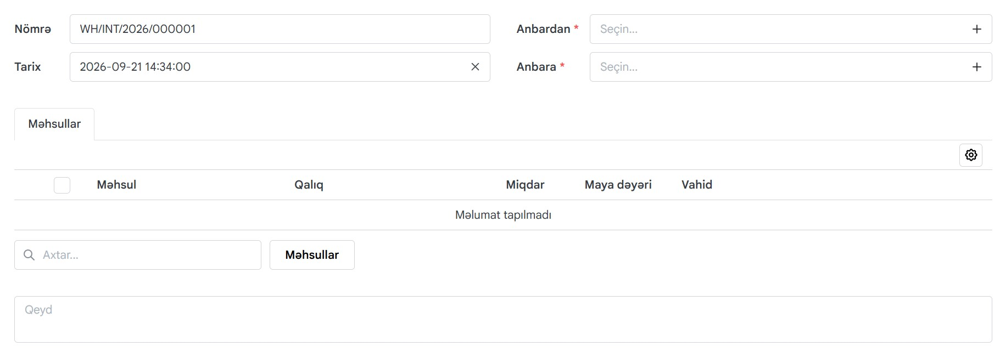
Yerdəyişmə bölməsində
Nömrə — sənədə sistem tərəfindən avtomatik verilən nömrə (məsələn "WH/INT/2026/000001"); əllə dəyişdirilmir.
Tarix — sənədin tarix və saatı; standart olaraq cari vaxt gəlir, "X" ilə silinib dəyişdirilə bilər.
Anbardan — malın göndəriləcəyi (çıxış ediləcəyi) mənbə anbar; qırmızı ulduzla işarələndiyi üçün mütləqdir. Siyahıda yoxdursa "+" ilə yeni anbar əlavə edilə bilər.
Anbara — malın daxil olacağı (qəbul ediləcəyi) təyinat anbarı; bu da mütləq sahədir.
Məhsullar — köçürüləcək məhsulların siyahısını göstərir. Cədvəldə hər sətirdə Məhsul adı, göndərən anbardakı cari Qalıq, köçürüləcək Miqdar, məhsulun Maya dəyəri və Vahidi görünür.
Axtar və ya Məhsullar — Axtar sahəsi və ya "Məhsullar" düyməsi ilə köçürüləcək məhsullar siyahıya əlavə edilir. Checkbox isə bir neçə sətri eyni anda seçib toplu əməliyyat aparmaq üçündür.
Qeyd — yerdəyişmənin səbəbini və ya əlavə qeydləri yazmaq üçün sərbəst mətn sahəsidir.
Yerdəyişmə zamanı malın çatmasını kim və hansı mərhələdə təsdiqləyir?
Adətən qəbul edən tərəfin (bar və ya mətbəx) məsul işçisi sənədi "Qəbul et" düyməsi ilə təsdiqləyir, bundan sonra mal həmin anbarın qalığına əlavə olunur.
3. Anbar uçotu (Malların hərəkəti)
3.4. İnventarizasiya (Sayım)
Əllə sayım aparmaq üçün akt (blank) necə çap olunur?
"İnventarizasiya" bölməsindən yeni akt yaradılır, sistem cari qalıqları boş sütun ilə çap formasına çıxarır, işçilər faktiki miqdarı əllə həmin blankda qeyd edir.
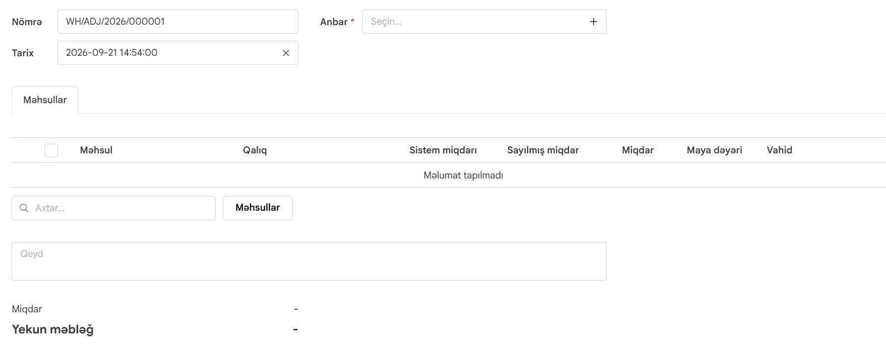
İnventarizasiya bölməsində:
Nömrə — sənədə sistem tərəfindən avtomatik verilən nömrə (məsələn "WH/ADJ/2026/000001"); əllə dəyişdirilmir.
Anbar — inventarizasiyanın hansı anbarda aparılacağını göstərir; qırmızı ulduzla işarələndiyi üçün mütləqdir. Siyahıda yoxdursa "+" ilə yeni anbar əlavə edilə bilər.
Tarix — sənədin tarix və saatı; standart olaraq cari vaxt gəlir, "X" ilə silinib dəyişdirilə bilər.
Məhsullar — sayılan məhsulların siyahısını göstərir. Cədvəldə hər sətirdə Məhsul adı, Qalıq, Sistem miqdarı (proqramda uçotda görünən miqdar), Sayılmış miqdar (əl ilə faktiki sayılıb daxil edilən miqdar), Miqdar (fərq — artıq və ya əskik), məhsulun Maya dəyəri və Vahidi görünür.
Axtar və ya Məhsullar— Axtar sahəsi və ya "Məhsullar" düyməsi ilə sayılacaq məhsullar siyahıya əlavə edilir. Checkbox isə bir neçə sətri eyni anda seçib toplu əməliyyat aparmaq üçündür.
Qeyd — inventarizasiya ilə bağlı əlavə qeydlər üçün sərbəst mətn sahəsidir.
Yekun məbləğ — sənədə daxil olan bütün məhsullar üzrə fərqin ümumi miqdarı və onun məbləğ ekvivalenti.
Faktiki qalıqlar proqrama necə daxil edilir?
Blankdakı faktiki rəqəmlər inventarizasiya sənədində hər məhsulun qarşısına əl ilə yazılır (və ya barkod skaneri ilə sayılıb avtomatik cəmlənir).
Sistem artıq və ya əskik gələn malları necə göstərir və bu fərqlər hansı sənədlə tənzimlənir?
Sistem faktiki miqdarı sistem qalığı ilə müqayisə edib fərqi göstərir. Sənəd təsdiqlənəndə artıqlıq avtomatik mədaxil, əskiklik isə silinmə kimi sistemə yazılır.
4. Kassa modulu (POS terminal)
4.1. İş gününün başlanması və bağlanması
Kassir sistemə necə daxil olur (PIN-kod, kart, şifrə)?
Kassir öz istifadəçi adı/PIN-kodu, maqnit kartı və ya barmaq izi ilə sistemə giriş edir — istifadə olunan üsul sistemin təhlükəsizlik tənzimləmələrindən asılıdır.
Növbə (smena) necə açılır və xırdalamaq üçün kassa qalığı necə daxil edilir?
Kassir daxil olduqdan sonra "Növbəni aç" düyməsinə basır və kassada olan başlanğıc nağd pul məbləğini daxil edir. Bu məbləğ "Kassa avansı" kimi sənədləşir.
Z-hesabat necə çıxarılır və növbə necə qapadılır?
Növbə sonunda "Növbəni bağla" seçilir, sistem gün ərzindəki bütün satışları yekunlaşdırıb Z-hesabatı formalaşdırır. Nağd pul qalığı faktiki kassa ilə tutuşdurulur.
4. Kassa modulu (POS terminal)
4.2. Çekin vurulması
Məhsul çekə necə əlavə olunur: skanerlə, axtarışla, yoxsa sürətli menyu düymələri ilə?
Hər üç üsul mümkündür: barkod skaneri ilə oxutmaq, məhsul adını axtarış sətrində yazmaq, və ya ekrandakı sürətli-satış düymələrinə toxunmaq.
Məhsulun sayı necə dəyişdirilir və ya səhv vurulmuş mal çekdən necə silinir?
Çekdəki məhsula toxunub miqdar sahəsindən say dəyişdirilir. Səhv əlavə olunmuş məhsul seçilib "Sil" düyməsi ilə çekdən çıxarılır.
Endirim necə tətbiq olunur (əllə daxil edilən və ya müştərinin loyallıq kartı ilə)?
Endirim ya kassir tərəfindən əl ilə faiz/məbləğ kimi daxil edilir, ya da müştərinin loyallıq kartı sistemə daxil ediləndə ona bağlı endirim avtomatik tətbiq olunur.
4. Kassa modulu (POS terminal)
4.3. Ödəniş və qarışıq ödəniş növləri
Nağd ödəniş necə qəbul edilir və qalıq (qaytarılacaq məbləğ) necə hesablanır?
Kassir müştərinin verdiyi nağd məbləği daxil edir, sistem çekin cəmi ilə fərqi avtomatik hesablayıb qaytarılacaq qalığı ekranda göstərir.
Məbləğ bank POS-terminalına necə göndərilir?
"Kartla ödəniş" seçiləndə, əgər kassa proqramı bank terminalına inteqrasiya olunubsa, məbləğ avtomatik terminala ötürülür; olmadıqda kassir məbləği əl ilə ayrıca daxil edir.
Müştəri ödənişin bir hissəsini kartla, bir hissəsini nağd ödəmək istədikdə nə edilməlidir?
"Qarışıq ödəniş" seçimindən istifadə olunur — kassir cəmin bir hissəsini nağd, qalanını kart kimi ayrı-ayrı daxil edir.
4. Kassa modulu (POS terminal)
4.4. Geri qaytarma (İadə) və ləğvetmə
Gün ərzində (növbə bağlanmamış) məhsulun qaytarılması necə rəsmiləşdirilir?
Kassada "İadə" funksiyasından həmin çek tapılır, qaytarılan məhsul seçilir və məbləğ müştəriyə geri qaytarılır — bu Z-hesabatında ayrıca əks olunur.
Əvvəlki günlərdə alınmış malın qaytarılması necə həyata keçirilir?
Bağlanmış köhnə çeklər üçün adətən menecer icazəsi tələb olunur; "Köhnə çek üzrə iadə" bölməsindən çek tapılıb ayrıca iadə sənədi yaradılır.
5. Maliyyə və hesablaşmalar
5.1. Borclar və təchizatçılarla hesablaşma
Hansı təchizatçıya nə qədər borcun olduğunu haradan görmək olar?
"Təchizatçılarla hesablaşma" hesabatından hər təchizatçı üzrə cari borc, ödənilmiş məbləğ və borcun hansı mədaxil qaiməsindən yarandığı görünür.
Təchizatçıya ödəniş faktı proqrama necə daxil edilir?
"Ödəniş" sənədi yaradılır, ödəniş mənbəyi (nağd kassa və ya bank hesabı) seçilir, təchizatçı və məbləğ göstərilib sənəd təsdiqlənir — borc avtomatik azalır.
5. Maliyyə və hesablaşmalar
5.2. Şirkətin xərcləri
Əməliyyat xərcləri necə qeyd olunur (icarə, təsərrüfat xərcləri, əməkhaqqı)?
"Xərclər" bölməsində xərc növü seçilib, məbləğ və ödəniş mənbəyi göstərilməklə xərc sənədi yaradılır.
Cari anda kassada və ya seyfdə olan nağd pul qalığına haradan baxmaq olar?
"Kassalar" və ya "Maliyyə hesabatları" bölməsindən hər kassa/seyfin real vaxt rejimində cari qalığı izlənilə bilər.
6. İstehsalat (İstehsal prosesi və kalkulyasiya)
6.1. Texnoloji xəritələr (Reseptura)
Hazır məhsul üçün tərkib (inqrediyentlər/xammal) necə daxil edilir?
Məhsul kartında "Reseptura" bölməsi açılır, hazır məhsula lazım olan xammal siyahısı və hər birinin miqdarı əlavə edilir; sistem bunlar əsasında maya dəyərini avtomatik hesablayır.
İstehsal zamanı xammal itkisi (fire / təmizlənmə faizi) necə nəzərə alınır?
Reseptura sahəsində hər xammal üçün "itki faizi" göstərilir, sistem bu faizi nəzərə alaraq real sərf olunan miqdarı hesablayır.
6. İstehsalat (İstehsal prosesi və kalkulyasiya)
6.2. İstehsalat aktı (Buraxılış)
İstehsalat sənədi necə yaradılır və xammal anbarından çıxış necə baş verir?
"İstehsalat aktı" yaradılır, hazırlanan məhsul və miqdarı göstərilir; sənəd təsdiqlənəndə reseptura əsasında lazımi xammal avtomatik anbardan silinir, hazır məhsul isə anbara mədaxil olunur.
Əlavə xərclər (usta haqqı, elektrik və s.) hazır məhsulun maya dəyərinə necə oturur?
İstehsalat aktında "əlavə xərclər" sahəsinə uyğun məbləğ daxil edilir, sistem bu xərci hazırlanan məhsulların sayına bölüb maya dəyərinin üzərinə əlavə edir.
6. İstehsalat (İstehsal prosesi və kalkulyasiya)
6.3. Yarımfabrikatlar
Digər məhsulların tərkibində istifadə olunan yarımfabrikatların istehsalı necə qeydiyyata alınır?
Yarımfabrikat ayrıca "yarımfabrikat" tipli kart kimi yaradılır, öz reseptura və istehsalat aktı ilə hazırlanır, sonra digər məhsulların reseptruasında adi xammal kimi istifadə oluna bilir.
7. Restoran modulu (Zal, Mətbəx və Qonaqlara xidmət)
7.1. Zal və masaların idarə edilməsi
Zal planı və masaların sxemi sistemdə necə qurulur?
"Zal redaktoru" bölməsində masalar sürüklə-burax üsulu ilə vizual sxem üzərində yerləşdirilir, hər masaya nömrə və tutum təyin olunur.
Masanın bir ofisiantdan digərinə ötürülməsi və ya qonağın başqa masaya keçirilməsi necə edilir?
Açıq sifariş üzərindən "Masanı dəyiş" və ya "Ofisiantı dəyiş" funksiyası istifadə olunur — sifariş öz tərkibi ilə birlikdə yeni masaya köçürülür.
7. Restoran modulu (Zal, Mətbəx və Qonaqlara xidmət)
7.2. Sifarişin qəbulu və modifikatorlar
Masaya sifariş necə vurulur və yemək üçün modifikatorlar necə əlavə edilir?
Ofisiant masanı açıb menyudan yeməkləri seçir, hər yeməyin yanında əvvəlcədən təyin olunmuş modifikator siyahısından uyğun qeydi (şəkərsiz, orta bişmiş və s.) işarələyir.
Mətbəxə/Bara çap (bilet/runner) necə gedir və ya mətbəx ekranında (KDS) necə görünür?
Sifariş təsdiqlənən kimi məhsulun kateqoriyasına görə avtomatik mətbəx/bar printerinə çap olunur, ya da KDS ekranında yeni sifariş kartı kimi görünür.
7. Restoran modulu (Zal, Mətbəx və Qonaqlara xidmət)
7.3. Hesabın bölünməsi və bağlanması
Qonaqlar hesabı ayrı-ayrı ödəmək istədikdə çek necə bölünür?
"Hesabı böl" funksiyası ilə çekdəki mövqelər bir neçə alt-çekə bölünür (bərabər hissəyə və ya seçilmiş mövqelərə görə), hər hissə ayrıca ödənilir.
Xidmət haqqı (servis faizi) avtomatik necə hesablanır?
Sistem tənzimləmələrində təyin olunmuş faiz çekin cəminə avtomatik əlavə olunur, zəruri hallarda kassir bunu əl ilə də dəyişə bilər.
8. CRM və Müştərilərlə iş
8.1. Müştəri bazası və profili
Yeni müştəri necə əlavə olunur və alış tarixçəsinə haradan baxılır?
"Müştərilər" bölməsindən yeni profil yaradılır (ad, telefon, kart nömrəsi), müştərinin kartına daxil olub bütün əvvəlki alışlarının tarixçəsinə baxıla bilər.
Müştərilərə kateqoriya və ya etiketlər (VIP, Daimi, Şikayətçi) necə təyin edilir?
Müştəri kartında "Etiket/Qrup" sahəsindən uyğun status seçilir; bu etiketlər sonradan filtrasiya və hədəfli kampaniyalar üçün istifadə olunur.
8. CRM və Müştərilərlə iş
8.2. Loyallıq sistemi və bonuslar
Keşbek, bonus xalları və ya endirim kartları necə tənzimlənir və kassada necə tətbiq olunur?
Loyallıq proqramı tənzimləmələr bölməsində qurulur, kassada müştərinin kartı/telefonu daxil edilən kimi toplanmış bonus avtomatik görünür və ödənişdə istifadə oluna bilir.
8. CRM və Müştərilərlə iş
8.3. Borc limitləri (Nisyə satışı)
Müştəriyə nisyə limitini necə təyin etmək və borc qalığına necə nəzarət etmək olar?
Müştəri kartında "Nisyə limiti" sahəsinə maksimum icazəli borc məbləği yazılır; limit aşıldıqda kassa xəbərdarlıq verir, cari borc müştəri kartında daim görünür.
9. Mühasibatlıq və Maliyyə hesabatları
9.1. Hesablar və kassalar
Şirkətin bank hesabları və nəğd kassaları sistemə necə tanıdılır?
"Maliyyə hesabları" bölməsindən yeni bank hesabı və ya nəğd kassa əlavə olunur, hər birinin adı və başlanğıc qalığı göstərilir.
Hesablararası daxili pul köçürmələri necə rəsmiləşdirilir?
"Daxili köçürmə" sənədi ilə bir hesabdan/kassadan digərinə məbləğ köçürülür, hər iki tərəfin qalığı avtomatik yenilənir.
9. Mühasibatlıq və Maliyyə hesabatları
9.2. Əsas maliyyə hesabatları
Mənfəət və Zərər (P&L) hesabatı haradan çıxarılır və rəqəmlər necə oxunmalıdır?
Hesabatlar bölməsində "P&L" seçilir, dövr göstərilir; hesabat gəliri, satılan malın maya dəyərini, xərcləri və xalis mənfəəti sətir-sətir göstərir.
Pul vəsaitlərinin hərəkəti (Cash Flow) hesabatı real pul qalığını necə göstərir?
Cash Flow hesabatı seçilmiş dövr üzrə bütün daxilolma və çıxışları göstərib dövrün sonunda faktiki nağd/bank qalığını hesablayır.
9. Mühasibatlıq və Maliyyə hesabatları
9.3. Qarşılıqlı üzləşmə aktları (Akt sverki)
Təchizatçı və ya müştəri ilə üzləşmə aktı necə formalaşdırılır və çap edilir?
Təchizatçı/müştəri kartından "Üzləşmə aktı" seçilir, tarix aralığı göstərilir, sistem dövrdəki bütün əməliyyatları siyahılayıb çap formasına çıxarır.
10. HR və Əməkhaqqı (Kadrlar)
10.1. Əməkdaş profili və giriş hüquqları
Yeni işçi necə qeydiyyata alınır və rollar üzrə icazələr necə tənzimlənir?
"İşçilər" bölməsindən yeni işçi əlavə olunur, ona uyğun rol (kassir, menecer, anbardar) seçilir; hər rolun giriş icazələri "Rollar" tənzimləmələrindən idarə olunur.
10. HR və Əməkhaqqı (Kadrlar)
10.2. İş vaxtının uçotu
Növbə cədvəli və işə gəlib-getmə saatları sistemdə necə qeyd olunur?
Növbə cədvəli "Qrafik" bölməsində planlaşdırılır; işə giriş-çıxış isə kassaya/sistemə giriş-çıxış vaxtları əsasında avtomatik qeyd olunur.
10. HR və Əməkhaqqı (Kadrlar)
10.3. Əməkhaqqı hesablanması
Sabit maaş, satışdan faiz (bonus) və ya saatlıq tariflər necə hesablanır?
Hər işçinin kartında əməkhaqqı növü seçilir; sistem işlənmiş saatlar və ya şəxsi satış məbləği əsasında hesablamanı avtomatik aparır.
Avanslar və cərimələr əməkhaqqından necə tutulur?
İşçiyə verilən avans və ya cərimə ayrıca sənədlə qeyd olunur, əməkhaqqı hesablanarkən bu məbləğlər yekun məbləğdən avtomatik çıxılır.
11. Sistem tənzimləmələri və Avadanlıqlar
11.1. Ticarət avadanlıqlarının qoşulması
Çek printerləri, barkod skanerləri və elektron tərəzilər sistemə necə inteqrasiya edilir?
Avadanlıq (USB, şəbəkə və ya Bluetooth ilə) kompüterə qoşulur, sistemin "Avadanlıqlar" tənzimləmələrindən uyğun model seçilib qoşulma yoxlanılır.
11. Sistem tənzimləmələri və Avadanlıqlar
11.2. Filial və anbar strukturu
Şirkətə yeni filial və ya satış nöqtəsi necə əlavə olunur?
"Filiallar" bölməsindən yeni filial yaradılır, ünvan və əsas məlumatlar daxil edilir, filiala aid kassa və anbar(lar) təyin olunur.
12. Texniki nasazlıqlar və FAQ
12.1. Problemlərin həlli
Çek printeri kəsmirsə və ya çap etmirsə nə etməli?
Əvvəlcə printerin kabel/şəbəkə bağlantısı və qidalanması yoxlanılır, kağızın düzgün taxılıb-taxılmadığına baxılır, sonra printer tənzimləmələrindən düzgün modelin seçildiyi yoxlanılır.
Barkod skaneri kodları oxumursa ilk növbədə nə yoxlanılmalıdır?
Skanerin kabel/Bluetooth bağlantısı, işıq indikatoru, barkodun zədələnməmiş olması və skanerin klaviatura emulyasiyası rejimində işlədiyi yoxlanılmalıdır.
İnternet kəsildikdə kassa işləyirmi və internet bərpa olunduqda məlumatlar necə sinxronlaşır?
Əksər müasir POS sistemləri "offline rejim"də işləməyə davam edir və satışları lokal yaddaşda saxlayır; internet bərpa olunduqda toplanmış məlumatlar avtomatik serverə sinxronlaşdırılır.
Kassir növbəni vaxtından əvvəl səhvən bağlayıbsa nə etmək lazımdır?
Bu halda adətən menecer/admin hüququ ilə növbəni yenidən açmaq və ya düzəliş sənədi vasitəsilə əməliyyatları davam etdirmək lazımdır.